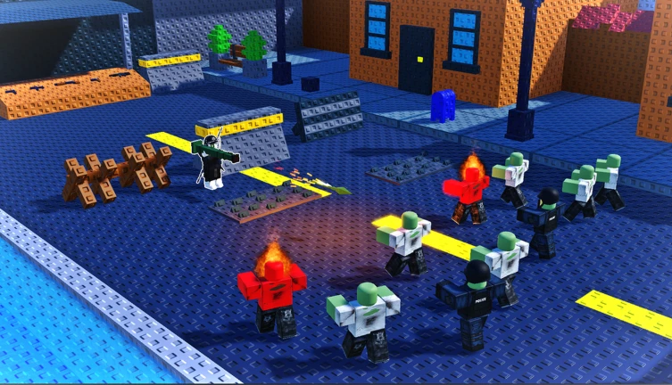

_Toccata_
Gameplay & Systems Programmer [Roblox Luau // Unity C#]
Hola ! I'm a 5th year software engineering student with over 3 years of experience with unity and roblox , i can make pretty much any system (vehicles , guns , saving ...) while paying attention to performance and scalability. feel free to reach out to me via discord for any questions or commissions.
Modular Vehicle Building System
Grid-aligned block placement, attachment point constraint assembly, motor/wheel/mechanical parts wiring, with fuel and power system and much more...
Vehicle Save & Load Serialization Pipeline
Custom slot-based vehicle serialization: encodes complex part hierarchies, attachments, CFrame coordinates, and material properties into compressed DataStores.
Part Painting System
Interactive paint tool featuring raycast target selection, dynamic color swatches, and networked multi-client replication.
Zombie Defence Engine (Combat, Building & Custom AI)
Complete survival defense framework featuring fast-paced gun mechanics, real-time barricade construction, and custom dynamic pathfinding around player structures.
Lego Like Destruction and Building System
Can be used on any model , with the ability to define which parts to place in what order.
2.5D Side-Scrolling Vehicle Physics Engine
Constraint-locked 2D plane vehicle physics featuring raycast suspension system , wheel motor torque, center-of-mass balance control, and dynamic tracking camera and more ...
Autonomous Traffic AI & Road Node Network
Waypoint graph road network featuring autonomous NPC vehicles with collision raycasting, intersection yielding, speed-limit compliance . made a custom plugin to make the node graph.
Acrobatic Aerial Car & Stunt system
Raycast car system with the ability to rotate mid air to perform stunts and gain boost on landing .

Build And Deliver
Physics sandbox simulator where players architect custom multi-part vehicles, configure motors and suspension, and transport deliveries across rugged terrain.

Zombie Survival & Defence
Round-based tactical survival experience featuring custom barricade construction, weapon recoil & projectile physics, and responsive horde AI.

Original 3D Character
Designed and concepted from hand-drawn sketches, then fully modeled, UV-unwrapped, and textured in Blender.

Custom Game UI Made in Figma
I made this ui in figma for me to later implement in my game Build and Deliver.

Crate Loading & Physics In Action
In-game capture of physical delivery transport and vehicle loading mechanics in Build and Deliver.
Open for Commissions
Currently accepting Roblox Luau scripting commissions, Reach out directly on Discord with your needs.
Discord
Fastest response for commission inquiries and discussions.
Roblox Profile
Check out playable experiences, published places, creations, and inventory.